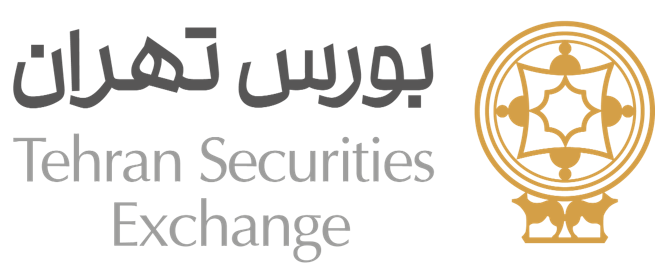
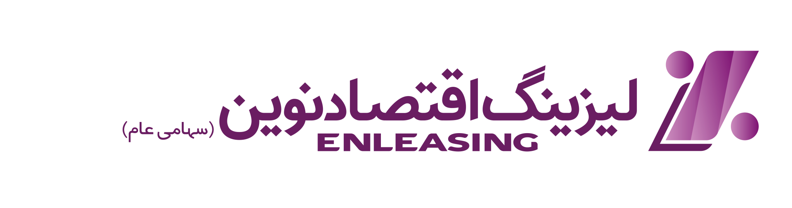
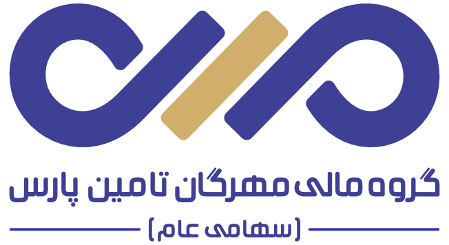
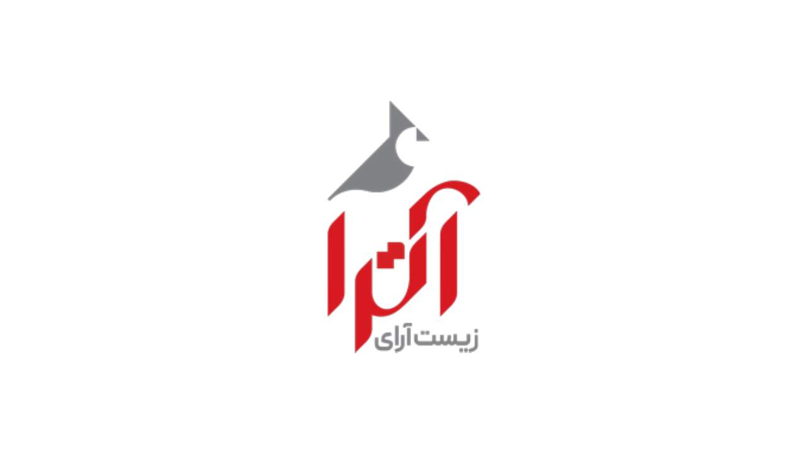
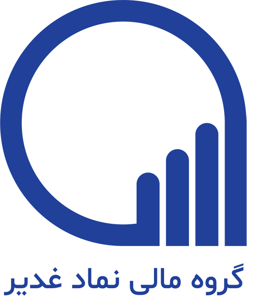
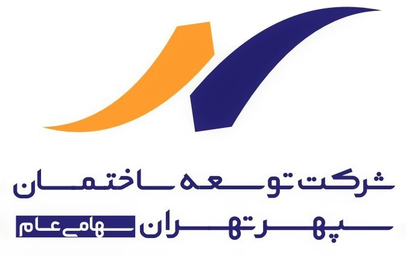

تعداد شرکتهای پذیرش شده

بورس تهران در سال ۱۴۰۴؛
روایتی از جایگاه امروز،
مسیر توسعهای پیشرو
و تداوم ارزشآفرینی برای سهامداران
بخش اول: جایگاه امروز بورس تهران
بورس تهران در یک نگاه
بورس تهران امروز، بستر اصلی معامله، شفافیت، نقدشوندگی و دسترسی فعالان بازار سرمایه است.
ارزش بازار (هزار میلیارد ریال)
سهم بورس تهران از ارزش بازار
۰٪
میانگین وزنی سهام شناور آزاد
۰

کارگزار فعال در شبکه معاملات
۰

ایستگاه معاملاتی در تهران، شهرستانها و تالارها
بازار امروز؛ بزرگ، متنوع، اما متمرکز
بورس تهران بازاری بزرگ و متنوع است، اما وزن صنایع بزرگ نشان میدهد عمقبخشی و تنوعبخشی همچنان یک ضرورت توسعهای است.
شبکه دسترسی و نقدشوندگی
بورس تهران فقط یک بازار متمرکز در تهران نیست؛ یک شبکه معاملاتی گسترده و عمدتاً دیجیتال است.
ارزش کل معاملات تالارها و دفاتر در 1404
۰
هزار میلیارد تومان
پوشش جغرافیایی
حضور در ۲۲ منطقه
بازار ۱۴۰۴؛ رشد شاخص و افزایش تحرک معاملاتی
در سال ۱۴۰۴، بازار با رشد شاخص و افزایش قابلتوجه ارزش معاملات، وارد مرحلهای فعالتر از تعامل سرمایهگذاران و ابزارهای مالی شد.
شاخص کل روزانه — از ۱۳۹۶ تا ۱۴۰۴
روند شاخص کل
مقایسه با سالهای گذشته — پایه ۱۰۰
ارزش کل معاملات — همت
جهش ارزش معاملات
مسیر توسعه
بورس تهران؛ بازاری متنوعتر از گذشته
بورس تهران دیگر فقط بازار سهام نیست؛ ابزارهای بدهی، مشتقه، صندوقهای قابل معامله و بازار سرمایهگذاری حرفهای هم بخشی از تصویر امروزند.
تعداد ابزارهای تامین مالی - سال ۱۴۰۴
ترکیب چندابزاری بازار
سهام
۳۹۸
اوراق بدهی
۲۲۲
اوراق مشتقه
۱٬۶۱۸
بزرگترین جهش این اسلاید در ابزارهای مشتقه دیده میشود.
صندوقهای قابل معامله
۱۰۸
سهامی عام پروژه / سرمایهگذاری حرفهای
۲
پذیرش و عرضه در سال ۱۴۰۴
۷ عرضه اولیه با لوگوی شرکتها
-

لیزینگ اقتصاد نوین -

سرمایهگذاری مهرگان تامین پارس -

آترا زیست آرای -

گروه مالی نماد غدیر - پتروشیمی اروند
- صنایع چاپ و بستهبندی آسان قزوین
-

توسعه ساختمان سپهر تهران
رشد تعداد اوراق مشتقه
جهش ابزارهای مشتقه
۱٬۶۱۸
در سال ۱۴۰۴
۱۴۰۲
۱٬۲۷۸
۱۴۰۳
۱٬۰۵۸
۱۴۰۴
۱٬۶۱۸
از ۱٬۰۵۸ در سال ۱۴۰۳ به ۱٬۶۱۸ در سال ۱۴۰۴ رسیده و به پرشتابترین دسته ابزارها تبدیل شده است.
گسترش ابزارها نشان میدهد بورس تهران از یک بازار متمرکز بر سهام، به بستری چندابزاری برای سرمایهگذاری، پوشش ریسک و تأمین مالی حرکت کرده است.
عملکرد مالی
بورس تهران؛ بازاری متنوعتر از گذشته
مقایسه تعداد ابزارهای تامین مالی
روند تنوع ابزارها از ۱۴۰۲ تا ۱۴۰۴
سهام
بیشترین عمق بازار
اوراق بدهی
مسیر رو به رشد تامین مالی
اوراق مشتقه
بیشترین جهش در ۱۴۰۴
صندوقهای قابل معامله
گسترش ابزارهای سرمایهگذاری
سهامی عام پروژه / سرمایهگذاری حرفهای
آغاز مسیرهای تخصصیتر
گسترش ابزارها نشان میدهد بورس تهران از یک بازار متمرکز بر سهام، به بستری چندابزاری برای سرمایهگذاری، پوشش ریسک و تأمین مالی حرکت کرده است.
بورس تهران؛ از بازار سهام به بازار چندابزاری
رشد ۸۲ درصدی ارزش معاملات در کنار افزایش وزن صندوقهای قابل معامله، نشانه تغییر رفتار سرمایهگذاران و حرکت بازار به سمت ابزارهای متنوعتر است.
ارزش کل معاملات بورس تهران
جهش ارزش معاملات در ۱۴۰۴
۸۲٪رشد سالانه
۲٬۲۳۸۱۴۰۲
۲٬۵۶۹۱۴۰۳
۴٬۶۸۶۱۴۰۴
ترکیب معاملات به تفکیک بازار
حرکت سرمایه به سمت ابزارهای متنوعتر
بازار سهام و حق تقدمهمت
۱٬۳۳۴
۹۹۸
۱٬۶۵۴
صندوقهای قابل معاملههمت
۷۵۸
۱٬۳۷۶
۲٬۷۵۷
بازار بدهیهمت
۱۱۸
۱۴۳
۱۵۰
بازار مشتقههمت
۲۷
۵۴
۱۵۶
سرمایهگذاری حرفهایهمت
۲
۳٫۳
۳٫۷
بورس تهران؛ بلوغ نهادی، ارزشآفرینی مستمر
رشد سرمایه و افزایش ارزش بازار در کنار سابقه بازدهی و سود نقدی، تصویری روشن از بلوغ شرکتی بورس تهران برای سهامداران ارائه میکند.
میلیارد تومان · سرمایه و ارزش بازار از ۱۳۸۸ تا امروز
سرمایه
ارزش بازار
۱۵۰۰٪ افزایش سرمایه
از ۱۳۸۵ تا ۱۴۰۴
متوسط بازدهی سالانه
۴۵٪
از ۱۳۸۵ تا ۱۴۰۴
مجموع سود پرداختشده
۶۳۲٫۵ میلیارد تومانبخش دوم: مسیر توسعه
از آمادهسازی زیرساختها تا فعالسازی بازار آینده
بورس تهران از سالهای گذشته، برنامههای توسعهای خود را در چهار محور دنبال کرده است.
تحول دیجیتال و بازار دادهمحور
اصلاح ریزساختار بازار
ابزارها و داراییهای نوین
افزایش دسترسی شرکتها به بازار سرمایه
داده؛ زیرساخت پنهان بازار آینده
توسعه بورس تهران در مسیر تحول دیجیتال و حکمرانی داده
اصلاح ریزساختار؛ مسیر ارتقای کیفیت بازار
حرکت بهسوی قواعد معاملاتی منعطفتر، بازارگردانی مؤثرتر و سازوکارهای متناسب با شرایط بازار
حذف حجم مبنا
اضافه شدن TAL
- دامنه نوسان پویا
- زمان معاملات
- زمان تسویه
- پیشبازار
- بازارگردانی مؤثرتر
معماری بازار آینده با ابزارهای متنوعتر
حرکت از طراحی محصول بهسوی شکلگیری بازارهای فعال، نقدشونده و پایدار
افزایش دسترسی شرکتها به بازار سرمایه
توسعه زیرساختهای پذیرش و ایجاد مسیرهای تازه برای شرکتها و سرمایهگذاران حرفهای
بخش سوم: عملکرد مالی
بررسی عملکرد مالی
صورت سود و زیان
| عنوانارقام به میلیون ریال | ۱۴۰۴میلیون ریال | ۱۴۰۳میلیون ریال | تغییردرصد |
|---|---|---|---|
| درآمدهای عملیاتی | ۱۱٬۲۳۰٬۱۹۸ | ۵٬۸۵۱٬۱۰۶ | ۹۲٪ |
| هزینههای عملیاتی | (۶٬۹۳۷٬۹۰۹) | (۵٬۱۳۸٬۶۷۱) | ۳۵٪ |
| سود عملیاتی | ۴٬۲۸۳٬۶۹۳ | ۷۱۳٬۸۳۸ | ۵۰۰٪ |
| حاشیه سود عملیاتی | ۳۸٪ | ۱۲٪ | — |
| سایر درآمدها و هزینههای غیرعملیاتی | ۳٬۵۲۱٬۷۷۶ | ۲٬۷۷۲٬۷۳۳ | ۲۷٪ |
| سود قبل از کسر مالیات | ۷٬۸۰۵٬۴۶۹ | ۳٬۴۸۶٬۵۷۰ | ۱۲۴٪ |
| هزینه مالیات بر درآمد | (۱٬۰۶۶٬۹۹۷) | (۲۷۳٬۱۵۷) | ۲۹۱٪ |
| سود خالص | ۶٬۷۳۸٬۴۷۲ | ۳٬۲۱۳٬۴۱۳ | ۱۱۰٪ |
| حاشیه سود خالص | ۶۰٪ | ۵۵٪ | — |
| سود هر سهم | ۲۸۱ | ۱۳۴ | ۱۱۰٪ |
| سرمایه | ۲۴٬۰۰۰٬۰۰۰ | ۲۴٬۰۰۰٬۰۰۰ | — |